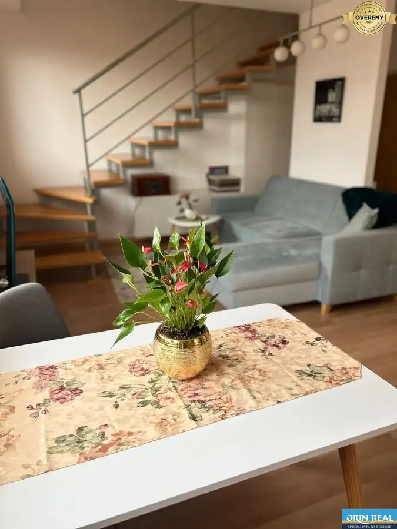
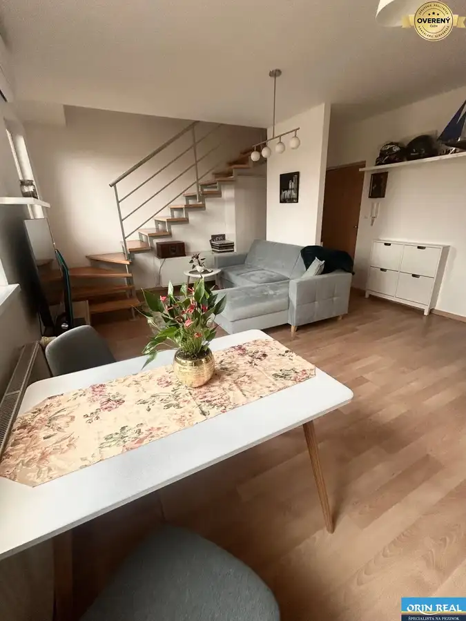
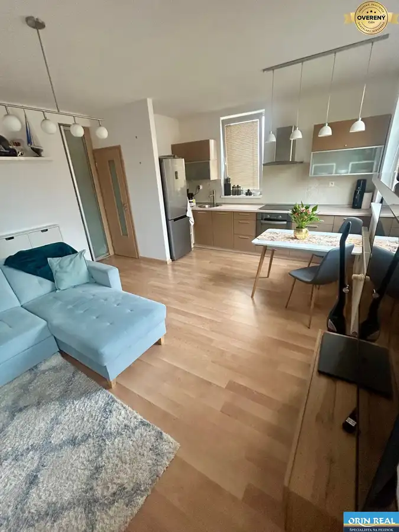
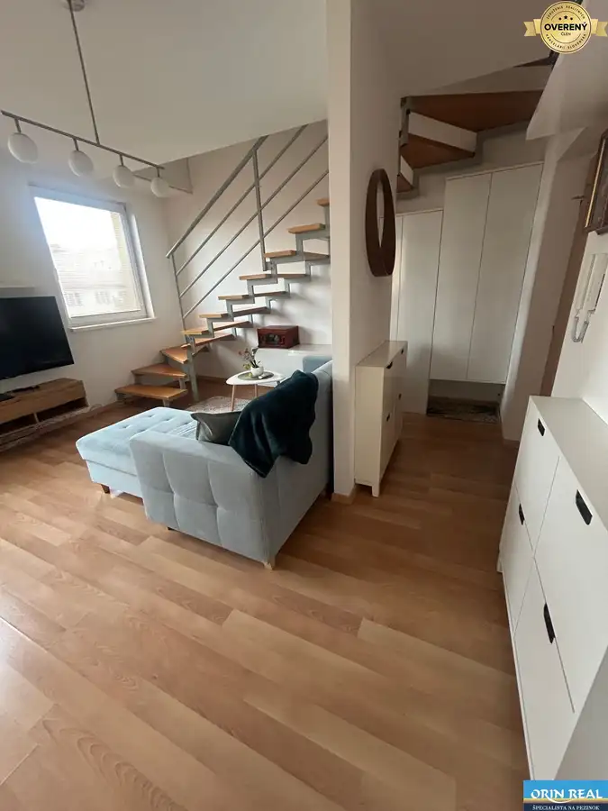
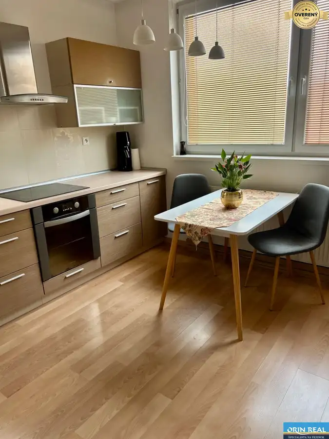
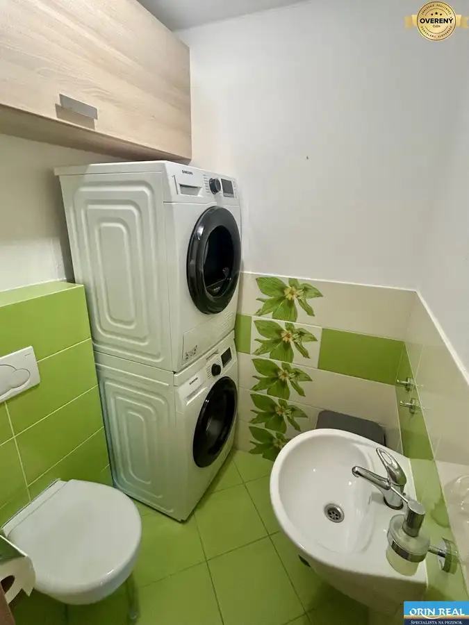

REZERVOVANÝ!Krásny zariadený 3izbový mezonet len na skok od centra
Senec







- Dispozícia3-izbový
- Plocha56 m²
- Poschodie4. z 4
- Vlastníctvoosobné
- Energetická triedaB
O nehnuteľnosti
Licencovaná realitná kancelária Orin real Vám ponúka na prenájom krásne zariadený, klimatizovaný, mezonetový byt v Senci na Svätoplukovej ulici, len na skok od centra mesta.
Samotný byt má rozlohu 56m2, nachádza sa na 4 a 5. podlaží v tehlovom bytovom dome bez výťahu - zateplený - nadstavba. Je vkusne a prakticky plne zariadený vstavaným nábytkom na mieru: kuchynská linka so spotrebičmi - umývačka riadu, varná platňa, elektrická rúra, chladničk s mrazničkou, sedačka, práčka so sušičkou, 2x wc na oboch podlažiach, klimatizácia, odkladací priestor v povale/cca 15m2, vstavané skrine a skrinky, jedálenský stolík so stoličkami, tv nábytok, manželská posteľ, botník...
Byt je dobre dispozične riešený: vstupnou časťou s prechodom do obývacej časti prepojenej s kuchyňou, wc s práčkou a sušičkou, schodisko a na poschodí 2 samostatné izby, k dispozícii je aj spoločná kočikáreň na prízemí bytového domu. Vhodný je pre dvoch dospelých, prípadne s jedným dieťaťom, menší bytový psík nie je prekážkou. Príjemný susedia, väčšinou rodinky s deťmi, vzdialený je 5min do centra a v tesnej blízkosti sa nachádzajú potraviny, MHD, pošta, rôzne služby, či reštaurácie v okolí.
V cene nájmu sú aj internet a energie 790,-Eur/mesiac, pri podpise sa hradí aj kaucia a provízia.
Voľný je od 1.
Tento byt je skvelou voľbou pre rodiny či páry, ktorí hľadajú moderné, komfortné a plne zariadené bývanie v príjemnej a pokojnej časti Senca.
Realitná kancelária ORIN REAL nezodpovedá za úplnosť a presnosť uvedených údajov. Inzerát má len informatívny charakter a nie je právne záväzným dokumentom.
Parametre
- Celková rozloha
- 56 m²
- Úžitková plocha
- 56 m²
- Poschodie
- 4/posledné poschodie
- Počet poschodí
- 4
- Počet izieb
- 3
- Vlastníctvo
- osobné
- Status
- aktívne
- Odvoz odpadu
- áno
- Plyn
- áno
- Internet
- optika
- Kúpeľňa
- vaňa
- Vykurovanie
- vlastné - plyn
- Balkón
- áno
- Pivnica
- áno
- Výťah
- nie
- Parkovanie
- verejné
- Postavené z
- tehla
- Zariadenie
- zariadený
- Zateplený objekt
- áno
- Klimatizácia
- áno
- Energetický certifikát
- B
- Bezbariérový prístup
- nie
- Okná
- plastové
- Orientácia
- juhozápadná
- Novostavba
- áno
- Dátum zverejnenia
- 2026-09-01